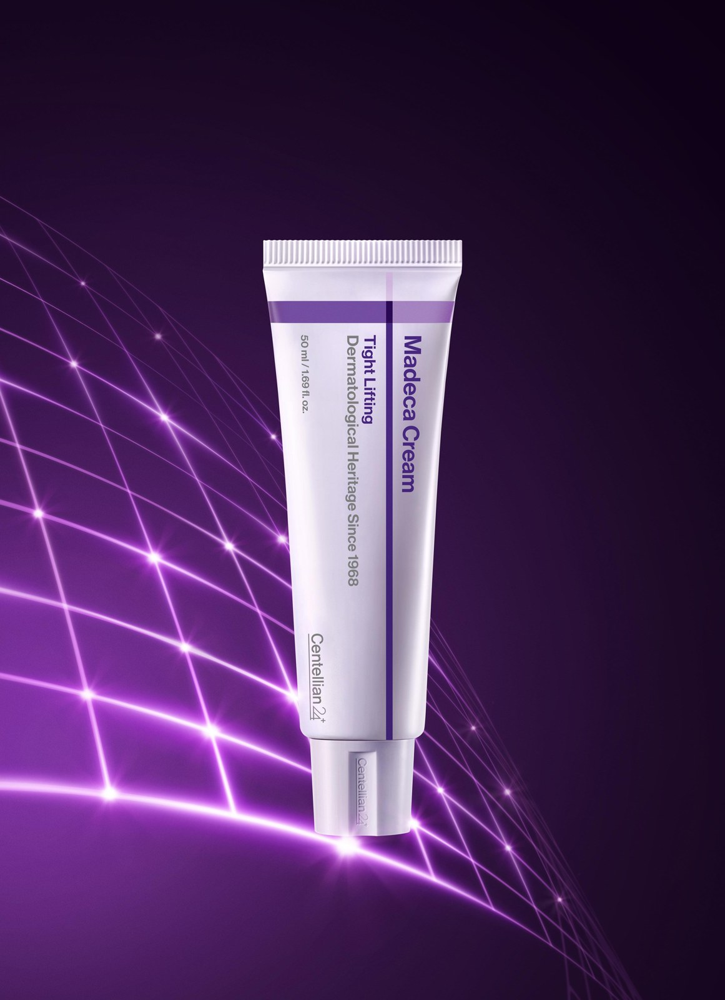

Why "Hydrogel Occlusion" Replaced Standard Sheet Masks in Seoul
Conventional microfiber or cotton sheet masks have a fundamental flaw: after 20 minutes, the fabric begins evaporating moisture back into the bedroom air—pulling hydration out of your skin if you accidentally fall asleep wearing one.
By contrast, solidified ampoule hydrogel masks like the Arocell Super Collagen Mask 2.0 contain no woven fabric at all. Instead, an entire 43-gram bottle of collagen, peptides, and hyaluronic acid is set into a flexible two-piece biocellulose-style gel that slowly melts from opaque milky-white to crystal-clear as your skin absorbs the active ingredients over 3 to 5 hours.


Step 1 of the Routine: Centellian24 Madeca Cream Time Reverse (The Base Layer)
Before applying a hydrogel mask, Korean dermatology enthusiasts apply a thin barrier-repair base layer so the hydrogel’s occlusive seal pushes active lipids deeper into the stratum corneum. Our top pick—and the undisputed #1 dermocosmetic cream in Korean home-shopping history with over 85 million tubes sold—is Centellian24 Madeca Cream Time Reverse by Dongkook Pharmaceutical.
- Pharmaceutical Heritage Since 1968: Dongkook is the pharmaceutical manufacturer behind Korea’s iconic Madecassol wound-healing ointment. Centellian24 channels that exact Centella asiatica extraction science into daily anti-aging skincare.
- Active-TECA 30,000 ppm: Encapsulates Titrated Extract of Centella Asiatica (asiaticoside, madecassic acid, and asiatic acid) down to a fraction of pore size so it absorbs rapidly without greasy residue.
- Soothing Redness & Fine Dry Lines: Whether your skin barrier is stressed from retinoids, cold winter wind, or long-haul flights, a pea-sized layer calms redness overnight.


Step 2 of the Routine: Locking It In With Arocell Super Collagen Mask 2.0
Wait 3 minutes after applying Centellian24 Madeca Cream so the emulsion settles into your skin, then apply the lower half of the Arocell Super Collagen Mask around your mouth and jawline, followed by the upper half around your eyes and forehead.
Within 15 minutes, the hydrogel molds tightly to facial contours so you can read, work on your laptop, or sleep on your back without it sliding off. By morning, the opaque white sheet turns completely transparent like a thin second skin—leaving plump, light-reflecting "glass skin" when peeled away.
Comparison Table: Top Overnight K-Beauty Collagen & Cica Picks on Amazon
| Product | Hero Ingredients | Size / Pack | Best Skin Types | Shop on Amazon |
|---|---|---|---|---|
| Arocell Super Power Mask (Collagen 2.0) | 300 Da Low-Molecular Collagen, 10 Peptides, Hyaluronic Acid, Niacinamide | 43g × 4 Sheets (or 5-Pack Box) | Dehydrated, Loss of Elasticity, Pre-Event Glow | 🛒 Check Price on Amazon |
| Centellian24 Madeca Cream Time Reverse | Active-TECA 30,000 ppm, Centella Protein, Panthenol, Ceramide NP | 50 ml (1.69 fl. oz.) Tube | Sensitive, Redness-Prone, Mature & Dry Barriers | 🛒 Check Price on Amazon |
| Biodance Bio-Collagen Real Deep Mask | Oligo-Hyaluronic Acid, Low-Molecular Collagen, Galactomyces Ferment | 34g × 4 Sheets | Combination & Pore-Refining Overnight Care | 🛒 Compare on Amazon |
Pros & Cons After 4 Weeks of Testing
✅ Pros
- Arocell 43g Weight Advantage: At 43g per sheet (compared to 34g on competing hydrogel masks), it stays hydrated longer and covers the jawline more generously.
- Centellian24 Daily Value: A single 50ml tube lasts 2.5 months of morning-and-night use and costs a fraction of luxury department-store peptide creams.
⚠️ Cons
- Hydrogel Fragility When Wet: Because Arocell is pure solidified ampoule, handle it with dry fingertips and avoid pulling it with long fingernails during initial placement.
- Herbal Scent: Centellian24 has a subtle, clean botanical-herbal aroma native to Centella extracts.